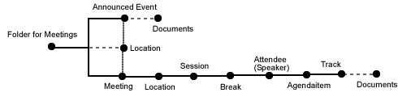

 .
'Id' -- The id of the AnnouncedEvent. This is the last part of the URL that is the address of the AnnouncedEvent..
'Type' -- The legal values of type is listed in the event_types property
of the meetings folder
'Title of event' -- The subject of the meeting.
'Summary' -- A short description of the meeting - not the agenda.
It is used when meetings are syndicated.
'URL Location' -- ????Either select one of the predefined *Meeting Locations*
or type it.???
'Start/End date' -- Enter the start/end times in YYYY/MM/DD YY:MM format.
'Organiser' -- The organiser is the person or organisation organising
the event. People expect to be able to contact the organiser for
information about the event.
If you have more documents you can add them to the folder and they will belisted as supporting documents.
...